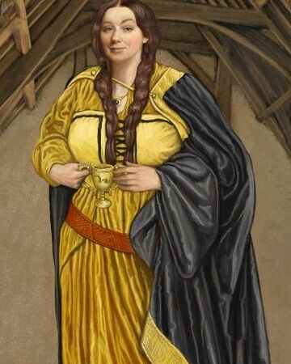

Helga Hufflepuff
Helga Hufflepuff

Helga Hufflepuff fue una bruja de la época medieval y fue una de los cuatro fundadores del Colegio Hogwarts de Magia y Hechicería. Mientras que los otros fundadores escogían alumnos con habilidades especiales, Hufflepuff aceptaba a todos, aunque los alumnos de la casa Hufflepuff son descritos como leales y trabajadores
Helga Hufflepuff nació en el siglo X y vino de los amplios valles de Gales.
fue una de los cuatro fundadores del Colegio Hogwarts de Magia y Hechicería y ayudó a construir la escuela. Cuando se conocieron Godric Gryffindor y Salazar Slytherin, hablaron sobre la posibilidad de un colegio de hechicería, mientras que Gryffindor se puso en contacto con Rowena Ravenclaw, Slytherin buscó a su amiga Helga Hufflepuff y así fundaron el colegio. Helga admitió estudiantes a su casa que no tuvieran miedo a trabajar duro. Mientras los otros fundadores tomaban estudiantes basándose en sus ambiciones, valentía, o inteligencia, Helga Hufflepuff tomó al resto de ellos, tratándolos a todos por igual y enseñándoles todo lo que sabía. Ella trajo gente de diferentes orígenes en conjunto para ayudar en la construcción de la escuela, y era conocida por sus maneras encantadoras. Helga tenía un don con los alimentos, y sus recetas se siguen utilizando como base para las fiestas en Hogwarts. Helga Hufflepuff también dispuso que los elfos domésticos trabajaran en la cocina, dándoles un lugar seguro donde vivir, en el cual no fueran maltratados ni abusados.
fue una mujer redonda y regordeta. Por lo general llevaba un vestido. Ella tenía el pelo rojo y los ojos azules.
Helga Hufflepuff fue una gran bruja de su época y una de los cuatro fundadores de Hogwarts. Se caracteriza por ser noble y justa, y aceptar en su casa a aquellos que son trabajadores y tienen un espíritu bondadoso. Su casa en Hogwarts es simbolizada por un tejón y los colores amarillo y negro. Helga poseía una copa, que más tarde fue convertida por Lord Voldemort en Horrocrux. Se dice que todos los platos que se sirven en Hogwarts eran recetas de Helga Hufflepuff.